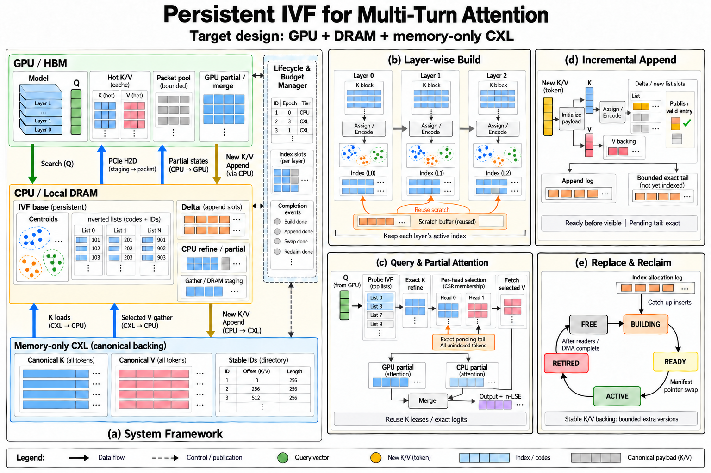

更新：2026-09-30。主线是多轮 session 的动态 IVF、partial attention 和有界内存管理；单节点 PCIe A100、CPU DRAM、memory-only CXL。研究动机和实验设计见 PROPOSAL.md，版本协议详见 INDEX_LIFECYCLE.md。
1. 架构总览与证据边界

图 1：全英文目标架构，非已测量系统。面板 (a) 为整体框架与分层内存，(b) 为逐层构建，(c) 为查询与 partial attention，(d) 为持续追加，(e) 为版本替换与回收。完整系统中的持续 session、IVF、CXL backing、native leases、CPU partial、混合路由和专用 GPU kernel 均待实现。图中成熟 attention 后端的集成已有数值证据，但不意味着整个数据流已运行。
V 在逐头选集确定后由执行路径获取；图中将这一步合并在执行规划与分层内存路径中。LSE 是内部 partial 归并与记录的状态，后续模型层消费 normalized output。
| 当前源码/证据 | 实际边界 | 目标扩展 |
|---|---|---|
module/interfaces.py 的 ModelAdapter / TokenSelector / AttentionExecutor | 模型、选择、执行接口已分离 | session、索引版本和跨设备工作描述 |
module/generation.py / model.py | 每次 generate 新建 DynamicCache，finally end_request；Llama-family、位置限制和 RoPE 范围明确 | 持续多轮、增量 prefill、最后一个 token 的缓存提交 |
module/cache.py | 观察 append，借用模型拥有的 tensor；token_ids=None；不是稳定 native backing | 稳定 ID、K/V 目录、实际 placement 和异步租约 |
module/selectors.py | full / exact-topk；Quest/retr-attn 为保留实验，后者 CPU NumPy exhaustive IP | IVF ID-only Flat 控制，SQ/PQ filter-refine，delta/rebuild |
module/executors.py | SDPA、FlashInfer、FP64；在线返回 output，不提供多路 partial 合作 | 统一 partial 接口、CPU SIMD、可选 GPU logits+V / masked GQA |
kv_trace.py / reference.py / backends/flashinfer.py | 单 step/group trace、数学 merge、自然对数 LSE adapter | 生命周期 trace、实际传输与性能计量 |
| RESULTS.md 和原始 runs | 小模型/合成数值检查；FP16 20/20、FP32 18/18；BF16 4 项 logits 失败 | 多轮质量、1M 索引持续性和 CXL 硬件实验 |
当前完整 KV 在模型设备上；无 CXL allocator、Faiss serving index、持续 session、稳定性能框架或优化 CPU/GPU 自研 kernel。当前 cache lease 的 release(completion) 仅接收参数并计数，不等待事件；现有 executors 没有返回实际 completion。未来分配器必须实现完整等待与回收，不能沿用当前计数逻辑冒充异步安全。
架构图：五个面板如何协作
| 面板 | 阅读重点与责任边界 |
|---|---|
| (a) System Framework | GPU HBM 保存权重、有限热 KV 和执行缓冲；CPU/local DRAM 保存索引、目录与控制状态；memory-only CXL 保存冷 K/V。生命周期与预算管理器协调在线读、维护和回收。冷数据经 CPU 读取与 staging 后送 GPU，或由 CPU 执行 partial。 |
| (b) Layer-wise Build | 每层产生 K 后做 assignment/encoding，建立该层/group 的持久索引；V 进入独立 backing。构建 scratch 按层复用，活动索引不能被下一层覆盖；所有构建时间与流量计入 TTFT。 |
| (c) Query & Partial Attention | Q 查询 IVF，候选经 canonical K 精排成为逐 head CSR 选集，再获取选中 V。KLease/exact logits 可交接；GPU/CPU partial 汇入同一 merge，输出 normalized output 与自然对数 LSE。精确 tail 覆盖全部尚未 indexed 的合法 KV。 |
| (d) Incremental Append | 初始化 K/V 与条目后发布；只有 K 用于索引 assignment/encoding，V 保持独立所有权。append log 与有界 pending tail 保护新数据和复制中条目；共同水位不跨过未完成 hole。 |
| (e) Replace & Reclaim | 在空闲槽构建新索引并追赶日志，以完整 manifest 切换活动版本。旧版本等 reader、CPU task、CUDA/DMA 与安装事件结束后复用；切换指针不免除 build/catch-up/drain 的成本。 |
2. 组件、问题领域与实现映射
| 组件 | 要解决的问题 | 输入/输出与协作 | 拟议实现位置 |
|---|---|---|---|
| Session / 模型接入 | 多轮缓存重用、chat template 与 position 一致 | 新 turn token suffix → 真 Q/new KV；维护 committed/pending token | 扩展 src/module/generation.py、model.py、interfaces.py |
| KV owner / 目录 | 大历史容量、K/V 分开访问、稳定地址与回收 | append record → row ID、placement、KVLease；backing ready 事件 | 扩展 cache adapter；未来 src/storage/ |
| IVF 检索 | 低成本插入、小批查询、Q/K 分布与召回 | Q + SnapshotHandle → 逐 head Candidates；不输出可直接用的近似 logits | 未来 src/index/；Faiss 控制和可替换自管 lists |
| 维护控制器 / 槽位池 | drift、skew、替换峰值、旧读者 | 历史统计 + credits → compact/retrain/replacement；发布 manifest | src/index/，详见 lifecycle |
| K 精排 / selection | 候选误差、避免 K 重读、保持逐 head 语义 | candidate union → canonical K 精确 QK → CSR + KLease + 可选 logits | 未来 src/retrieval/；首先 NumPy 控制 |
| 执行规划与 credits | 有限 DRAM/HBM、分散读、设备竞争 | 真实选集/地址 → resident、GPU packet 或 CPU partial 的 Work | 未来 src/execution/，先固定 whole-group |
| CPU/GPU executors | softmax/PV、传输与 launch 开销、GQA 复用 | Work + lease → normalized output + natural-log LSE + completion | 复用 module/executors.py；测得热点后才加 native/CUDA |
| 计量 / artifact | 防止逻辑 bytes、复制 bytes 和物理流量混淆 | identity、events、counters → 新 run 目录与阶段证据 | 扩展 module/artifacts.py、scripts/ |
以上新目录是实现落点，不在文档修订中创建空 scaffold。通用接口不强制 import CUDA/Faiss；纯 NumPy trace 路径继续可用。首轮沿用 Transformers，避免重建 serving engine。
3. 持续 session 与逐层 prefill
目标接口为 begin_session → append_turn → generate_turn → end_session，不在 turn 结束时销毁 KV。完整 chat-template token 序列必须和 committed prefix 匹配，验证后只前向新增 suffix；不按文本字符长度切 suffix。若模板或 tokenizer 改变历史 prefix，显式拒绝或记录有成本的重算策略。position、causal mask、模型 revision 和 RoPE 配置在全 session 内一致。
现有 greedy loop 的最后一个 emitted token 尚未经过下一次 forward，因此其 KV 可能不在 cache。目标 session 需显式维护 pending token，在新 turn 前提交它以及所需 EOS/template 控制 token；不能漏掉最后一个 assistant token，也不能重复追加。
每层产生新 K/V 后发 append record，可启动该层的 assignment/encoding/offload。构建 scratch 可按层复用，但所有层/group 的活动索引必须常驻各自目录。索引工作与模型共享 CPU/GPU/链路资源，其时间计入首轮和新轮 TTFT。
prefill 仍保持 dense causal 语义；长历史下需要有界 chunked/streaming 实现与旧 KV 后备读取才能支持真实 1M 模型运行。现有 GPU DynamicCache prefill 没有实现这条路。1M index trace 压测与 1M end-to-end 是两个里程碑；稀疏 prefill 算法为后续独立研究。
4. 版本发布与索引生命周期
MVP 从单 session、单层、单 KV group、单 writer 开始。每个空间维护不可变 IVF base、可搜索增量区、精确 pending tail 和二槽替换池。snapshot handle pin 住 KV 目录、索引 generation、可见 token 前缀以及 delta 描述；index-ready 与 backing-ready 是不同事件。
新增条目先初始化、后发布。尚未入索引或尚未下放的合法 KV 由精确 tail 覆盖，包含当前 decode token。delta、mandatory 与 ANN 重复命中按逐 head token ID 去重。共同水位不得跨过未完成 hole。
构建 B 时 A 继续服务，新增写入记有界日志。B 必须追赶到明确 cutover 水位；参数改变则重新 assignment/encoding。短提交门内发布完整 base + delta/tail + codebook + watermarks manifest；读者安全 pin 与发布协同，不能分别交换几个裸指针。A 退役后等待 CPU/GPU/DMA/安装事件，才能复用。
槽位池不移动 canonical K/V，索引 rebuild 不使全部 KV 租约失效；索引 handle 与 KV lease 是不同 owner。活动/退役索引和异步 staging 都占 credits；没有空闲槽位时推迟维护或回压。状态机、追赶与 ABA 约束见 INDEX_LIFECYCLE.md。
5. 从向量检索到精确 attention
真实 post-RoPE Q/K 使用模型 scaled inner product；原 K 不归一化成 cosine。coarse assignment、查询 metric、residual encoding、dtype 必须记录。centroids/codes 的 contiguous lists 仅保证索引扫描局部性；ID-only Flat 与 exact refine 对 canonical token-major K 的 gather 可能仍零散。
对 head h，候选为 C_h，精排后历史选集为 T_h，最终 S_h=T_h∪mandatory_h。每 head 单独精排；候选 union 仅合并 K 物理读，最终 union 仅合并 K/V 读取。用 union 代替每 head 的 mask 会改变 attention 语义。
exact refine 留存选中 K 的 lease，可交给执行端避免第二次 K 读取。未选中候选及时释放；V 在最终选集确定后获取。exact logits 只有 request/session、step、head、layer/group、KV 版本、scale、position/score transform 和精度全部匹配才复用，禁止用 ANN/PQ 分数直接作为 logits。
SnapshotHandle { session, layer, group, kv_layout_epoch, index_generation,
visible_hi, indexed_hi, base_hi, delta_refs, transform_id }
Candidates { query_identity, head_indptr, token_ids, approximate_scores }
Selection { query_identity, head_indptr, token_ids, mandatory_policy,
selected_K_lease, optional_exact_logits }
KLease { owner, kv_layout_epoch, token_to_offset, precision, ready_event }
Work { route, physical_spans, head_membership, buffer_slot, completion }
Partial { query_identity, head, partition_id, output, natural_log_lse }6. 内存放置、预算与协调
canonical 冷 K 与 V 分开存放；活动 codes/centroids/list metadata 优先 GPU-local DRAM。HBM 留模型权重、模型 workspace、有限 hot KV、packets 与 partial states；CXL 是容量后备，不执行 ANN 或 attention。已分配的 index slot 与 packet slot 分属不同 pool。
基线冷数据路径是 CPU 读 DRAM/CXL → 本地 pinned staging → PCIe H2D → GPU，或 CPU 原地 partial 后只传状态。GPU direct/mapped CXL 访问仅为单独可选 backend，必须核对平台支持；架构不假设 A100 具有 CXL.mem 端口。
三层各自硬预算，计入 active/building/retired index、delta/log/pending tail、K/V 副本、candidate K、pinned memory、packet ring、partial、workspace、allocator reserved/slack。全局只准有限 layer/group 同时 rebuild；不要每层默认一份完整额外索引。4/8-byte IDs、32-byte code 和全量 Flat K 复制的容量差异详见 lifecycle。
credits 覆盖索引查询、K refine、V 获取和后台维护。必要读优先、预取用剩余 credits、维护分片且防止永久饥饿；维护影响 TTFT/ITL 与真实流量均计量。不要把进程整体绑定到无 CPU 的 CXL node；按 allocation 和 worker 定位，并采样页驻留。
7. 高效执行与 GPU kernel 的进入条件
先比较固定 whole-group CPU 与 GPU-pack、GPU hot + 固定 CPU history；只有真实选集、驻留与 span 的测量说明有净空间，才增加 group 内分流。每 head 的各 route 分区两两不交并恰好覆盖 S_h；resident、pending tail、ANN 历史的物理和逻辑交集必须去重。
- CPU 路径：读取原 K/复用 exact logits → FP32 stable softmax/PV → 小 partial state 回传。
- GPU K+V 路径：有界 gather/packet → 现成 paged attention → partial。先以当前独立 head 逻辑行作基线。
- GPU logits+V 路径：复用真实 logits，只送选中 V 与描述；CUDA softmax/PV/merge kernel 是待实现候选。
- Masked GQA 路径：共享加载 KV tile，head membership 控制每个贡献；只有 per-head kernel 的重复读/launch 确为热点时才实现。
首先复用 FlashInfer 的成熟 attention，测量 plan/run、gather、H2D、tile/mask、merge 和同步；不预设 Tensor Core 比 SIMT 快。CPU 路径不使用 Python FP64 reference 作为性能基线。kernel 比较固定 mask、dtype、资源和 resident 状态；只测 kernel launch 不能支撑端到端加速。
异步 owner 在所有 completion 完成前保留 storage；generation 结束也要 drain。当前选部分 groups 会执行整层 SDPA 控制以保留其余 heads，造成重复计算，不能带着此诊断开销声称已优化模型。
8. 已实现的 Trace v1
文件由 numpy.savez 写入，不使用 pickle。输入仅接受可信的本地研究文件。
| 字段 | 形状 / 类型 | 语义 |
|---|---|---|
| q | [r,d] float32/float64 | 当前 step 的真实位置变换后 Q |
| k / v | [N,d] float32/float64 | 一个共享 KV head 的 canonical 内容 |
| indptr | [r+1] integer | head 的 CSR 边界 |
| indices | [sum_h ∣S_h∣] integer | canonical K/V 的 row ID，非 position 或 packet offset |
| positions | [N] integer | 各 row 对应的原始 token position |
| metadata_json | scalar Unicode JSON | 下列元数据 |
必需元数据：format_version=1、origin、model_id、model_revision、request_id、step、layer、kv_group、epoch、query_position、sm_scale、score_semantics=scaled_dot_product_post_rope、position_transform、source_dtype。
真实模型额外记录 capture_mode、prompt_id、q_head_ids、model_config_sha256。position_transform 推荐为包含 RoPE 配置的 JSON object；代码只能验证存在，模型 capture 负责正确性。
BF16/FP16 tensor 可以无损转换成 float32 存入 NPZ。NPZ 的磁盘/host 占用因此不同于 canonical BF16 payload，两者不得混算。GPU adapter 检查目标 dtype 的往返转换是否保留数值，拒绝静默降低精度。
GroupTrace 的 frozen dataclass 只禁止重绑字段，不保证内部数组/字典物理只读。调用者负责把已记录 trace 当不可变证据。当前不是并发 runtime 的生命周期实现。
9. Partial state 数值契约
对于一个 head 的分区 P，s_i = scale · qᵀk_i：
m = max(s_i)
z = sum exp(s_i - m)
o = sum exp(s_i - m) V_i / z
L = m + ln(z)标准输出为 (o, L)，L 使用自然对数。空分区输出零向量和 L=-inf。
归并 A/B 时：L=logaddexp(L_A,L_B)，o=exp(L_A-L)o_A+exp(L_B-L)o_B；两个分区都空时单独返回空状态，避免 -inf - -inf。代码不持有 partition provenance，调用者必须保证不重不漏。
所查 FlashInfer 常规 attention/cascade 路径采用 base-2 LSE。当前 adapter 将它乘 ln(2) 转为内部格式；调用 FlashInfer merge 时应反向除以 ln(2)。更换 backend 时重新核实数值约定。
10. 已实现的 GPU 基线映射
- 每个非空 Q head 作为一个逻辑 request，
num_qo_heads=num_kv_heads=1。 - Q 为
[active_heads,1,d]；K/V pool 为[unique_tokens,1,1,d]。 - CSR indices 可以跨 heads 指向同一个 pool entry，保留存储去重。
page_size=1是 GPU adapter 视图；未来 CXL backing page 可以独立设为 16/32/64 tokens。- Q/K 已做位置变换，kernel 使用
pos_encoding_mode=NONE。 - 独立行可能丢失 kernel 内 GQA 复用；后续以 membership/signature 分组测量该代价。
- 空 heads 不提交给 wrapper，结果保留零输出和
-inf。
索引生命周期：追加、替换与安全复用
以下为完整目标协议，与研究提案和组件契约一致。每个 session / layer / KV group 保留活动索引；全局复用 scratch 与有限额外版本槽位，不能用一对 buffer 覆盖所有层。
更新：2026-09-30。本文是目标协议与研究假设；持续 session、IVF、版本槽位和 native allocator 尚未实现。研究叙事见 PROPOSAL.md，组件契约见 ARCHITECTURE.md。
1. 核心想法与适用范围
在一个持续多轮 session 中，prefill 分批产生新 K/V，decode 逐 token 产生新 K/V。累计 context 的本阶段目标上限约为 1,000,000 tokens；它是研究 workload 的规模，不是所有模型的最大能力。历史 KV 不随 turn 结束清空，向量索引持续追加、复用和维护。
希望把常见路径做成便宜的 append，把昂贵维护移到另一个槽位：当前索引继续服务，新索引在后台建立，准备好后切换活动指针，旧查询完成后回收旧槽位，并在下一次维护时复用。环形槽位管理分配与版本生命周期；发布开销可以与索引大小无关，构建、追赶写入、等待读者和清理的总成本仍需计量。
这属于 snapshot/delta、版本发布与内存池机制在 attention workload 上的设计适配，不能仅凭“双缓冲/指针切换”主张新颖性。HAKES、SIVF 与 InSituANN 分别提供并发更新、发布安全和替换式维护的参照；wiki 的 并发 IVF 分析 区分它们的硬件边界。
2. Owner、地址与版本
每个 (session, layer, KV group) 是独立索引空间。GQA 的 Q heads 共享这份 K 索引，但各自保留候选和最终选集。token row ID 在 session 内稳定，与 token position、posting offset、物理地址、packet offset 分开。
canonical K/V 使用分离的 append-stable backing，通过目录映射 row ID 到地址。索引替换只改变 centroids、codes、postings、目录描述和索引 generation，不搬动 canonical K/V。HBM 热区是有预算的 resident 副本；刚生成且尚未下放的尾部 K/V 有单独 owner。
三个进度不能混为一个 epoch：
| 状态 | 含义 |
|---|---|
| KV 布局版本 | backing 目录及地址租约所绑定的布局 |
| 索引 generation | centroid/codebook、base 和 delta 描述的版本 |
| 可见 token 水位 | 本次查询可读取的完整前缀上界；另记录已 indexed/backed 的前缀 |
每层进度独立：layer 0 已生成当前 token 时，后续层可能还没生成它。查询只 pin 本层/group 的一致视图，并以自己的 query position 限制 causal 可见性。指针获取和 pin 必须受短锁或经过验证的安全读者协议保护；裸指针读取后再加 refcount 存在回收竞态。MVP 先用短锁、单 writer 和 refcount，不把无锁实现设为前置目标。
3. 追加与未入索引尾部
起点为不可变 IVF base + 可搜索增量区 + 精确 pending tail。增量区内条目使用当前 generation 的 routing/encoding 参数；首批数据不足以训练时先走 exact tail，训练只消费当前已可用 K。
追加记录经历“GPU 可用 → 复制中 → backing 可用 → 索引条目初始化完成 → 发布”。先写 payload、ID 和编码，再发布有效标志/已提交长度；未完成条目不可被搜索。多条并行写入时，共同水位只推进完整前缀，不能以最大已完成 ID 代替。
查询返回以下两部分的候选：已发布 base/delta 的 ANN 候选，以及尚未入索引尾部的精确结果。sink/window/current token 可直接进入 mandatory 路径；与索引命中、tail 交集按逐 head ID 去重。任何不在 ANN 可见前缀内的合法 KV 都必须由精确尾部覆盖，不能只覆盖最近窗口而遗漏排队数据。
pending tail、追加日志和复制队列均有上限。维护或复制跟不上时，暂停准入、限制进一步生成或同步推进，并记录等待；不能丢 KV、提前复用槽位或无限扩大 tail。CXL 尚未 ready 的条目必须保留可读取的 GPU/DRAM 来源，不能释放唯一副本。
4. 替换、追赶与发布
MVP 采用单 writer、一个后台 builder；更新提交与发布由同一短临界区协调，索引长扫描不持有发布锁。
- 取得完整的 build 水位
b，pin 对应 canonical K 目录。活动索引 A 继续提供读服务；新写入同时进入有界日志。 - 在空闲槽位构建 B，覆盖前缀
[0,b]。同 centroid 的 compaction 与重新训练是不同操作；重新训练可能需要 K 扫描、重新 assignment 和编码，全部计成本。 - 在锁外反复追赶
(b,c]的新增记录，直到剩余 backlog 小于预设切换预算。若 B 参数改变，不能直接拼接 A 的 residual codes；从原始 K 按 B 参数重新生成条目。 - 进入有界提交门，冻结 A 的增量描述，选择完整 cutover 水位
c，补完最后一批，建立“B 覆盖至 c + B 的新 tail/delta”这一完整 manifest。期间新产生的 KV 留在受保护的 pending tail，相关等待和精确扫描必须计时。 - 以 release/acquire 发布 manifest 指针与 generation。发布是一个整体操作，不能分别切换 centroid、postings 和水位。后续查询 pin B，已有查询仍使用 A 和自己的可见上界。
- A 进入退役状态；所有读者、CPU task、CUDA kernel、DMA、cache install 和 build lease 完成后，才归还其内存块。构建失败时放弃 B，A 继续服务，失败的时间和内存仍进入记录。
publication 并不意味着零暂停；应分别报告构建、catch-up、临界区、reader drain、可重新利用时间。若最终追赶无法在预算内收敛，采用显式回压或更细的分区替换。并行多编码 delta 属于后续方案，MVP 不靠它掩盖追赶成本。
5. 索引槽位环与真正可复用的资源
槽位状态为：
空闲 → 构建中 → 待发布 → 活动 → 退役 → 可回收 → 空闲两个槽位支持“一个活动、一个构建”；活动切换后，第二槽位可能仍被旧读者占用，因此不能立即启动下一次 rebuild。第三槽位能缓解 build/serve/retire 重叠，但增加峰值容量。槽位复用同时更新 generation，避免旧 handle 指向同一地址上的新索引，即 ABA 问题。
prefill 按 layer 产生 K/V，为逐层 assignment/编码和 scratch 复用提供机会。层间依赖、offload 完成事件和共享带宽决定是否真能重叠；构建仍会增加首轮或新轮 TTFT。每层/group 的活动索引必须留存，不能拿一对全局 buffer 循环覆盖所有层。第一版只允许一个 layer/group 的额外替换索引同时构建，用全局 credits 控制 scratch 与临时容量。
索引槽位环与 H2D packet/staging 环是两个池：前者等所有索引读者结束，后者等传输及 attention 消费结束。不可使用相同完成条件。allocator 保留内存用于复用时，“逻辑释放”也不等于 RSS 或物理容量下降。
逻辑清空可用 generation、有效长度和块描述复位，避免逐元素归零；旧条目必须被新有效范围隔离。若 free()、析构、遍历元数据或设备端 reset 仍是 O(N)，不能只测 pointer swap 宣称整体 O(1)。
6. 容量与布局取舍
估算须乘上所有 layer/group。设 L 层、G 个 KV heads、N tokens、维度 d、每元素 b bytes：
- canonical KV：
2 × L × G × N × d × b。 - 紧凑索引：约
L × G × N × (ID bytes + code bytes)，另加 centroids、metadata、slab slack、allocator 和 build scratch。 - 峰值：所有活动索引 + 有界替换索引 + 仍未回收的旧版本 + delta/log/tail + canonical KV + resident 副本 + staging/workspace。
例如 L=32、G=8、d=128、BF16、N=1,000,000，canonical KV 约 122.1 GiB；若每向量存 4-byte ID 与 32-byte code，所有活动索引约 8.58 GiB，一个 layer 的额外索引约 274.7 MiB，均不含额外开销。若采用 Faiss 64-bit ID，要改用 8 bytes；若 IVF-Flat 另存完整 K，复制开销可接近完整 K 的约 61.0 GiB。以上仅为架构示例和容量推算，不是测量结果。
32-byte PQ code 不是最优参数承诺；MVP 的 IVF-Flat 可用 ID-only postings 扫 canonical K，随后加入 SQ/PQ。连续 postings/codes 不意味着 canonical K 连续：保持 token-major 稳定 backing 会引入随机 gather。先测按物理地址排序和合并 extent；cluster-major canonical 布局另设消融，不能无成本继承 InSituANN 原向量重排的局部性收益。
7. 维护决策与验证问题
由轻到重比较：保持现状、调整 nprobe/候选量、同 centroid 合并 delta、分区 split/merge、重训 centroid/codebook、全索引替换。Q 分布漂移、K 新增分布和 posting skew 是不同信号；topic switch 不自动意味着必须 rebuild。
成本决策使用已发生的查询、写入、队列和 sampled audit，以及预测的剩余 session 查询量。用未来 Q 或事后最佳策略只构造离线 oracle。在线 exact recall audit 需要读完整 K，其成本必须收费；不能把离线完整 attention mass 当作免费在线触发器。
先比较二/三槽、每 turn 独立索引与全局 base+delta、new allocation 与槽位复用、logical reset 与逐项清空。报告 query/insert P50/P99、质量随 turn 变化、backlog、K 扫描、维护带宽、peak live/reserved memory、reader drain 和整个 session 摊销成本。质量、生命周期正确性、执行效率和 CXL 硬件结果分别验证。
现有代码只提供 request 级 DynamicCache observer 和 tensor borrow lease，尚不提供这些保证。multi-turn 的最后一个已输出但尚未前向的 token、EOS、chat-template 后缀必须先正确并入缓存，具体接口约束见 ARCHITECTURE.md。
研究与实验入口
完整 proposal 按背景/动机 → 研究边界 → 研究问题与候选贡献 → 技术方案 → 实验设计 → 预期结果 → M0–M6 计划 → 参考文献展开。主问题 Q1/Q2 是何时复用/维护、如何在持续追加中完成有界替换；K/logits 交接和 GPU kernel 根据测量进入。
实验顺序为 E0 session/生命周期正确性 → E1 复用/重建 → E2 内存管理 → E3 有效性 → E4 执行效率 → E5 实际 CXL 与端到端。当前结果在 RESULTS.md；482 项 CPU、644 项合计 GPU numerical 与 SmolLM2 FP16 20/20、FP32 18/18、BF16 16/20 属数值证据，BF16 四项严格 logits 失败保留，不代表质量或性能。
相关证据：并发 IVF：HAKES / SIVF、RetroInfer、FlashInfer、Sparse attention / CXL / ANNS 专题。动态索引、异构 attention、CXL KV 与版本发布均有相邻先例；当前贡献是待验证假设。